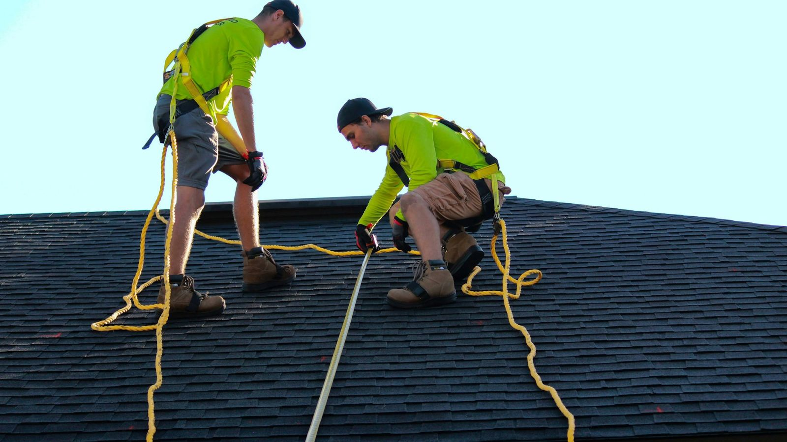

It's one of the most common calls we get, and one of the most stressful for the person calling. A letter shows up from the insurance company: your roof is too old, and your policy won't be renewed unless it's replaced. Or a new insurer won't even write a policy until they know how old the roof is.
Before you assume you need a whole new roof, it helps to know what Florida law actually says, and what options you have.
The 15-year rule
In 2022, Florida changed the law on roof age and homeowners insurance. In plain terms:
- If your roof is less than 15 years old, an insurer can't refuse to write or renew your homeowners policy just because of the roof's age.
- If your roof is 15 years or older, the insurer has to let you have it inspected before refusing coverage based on age alone. If the inspection shows the roof has at least five years of useful life left, they can't turn you down for its age alone.
That second point is the one most people don't know about. An older roof isn't automatically a dead roof. Plenty of well-installed, well-maintained roofs in Pinellas County have years left in them.
A few honest caveats: insurers can still decline coverage for other reasons, like actual damage or a roof in poor condition, and the details of every policy are different. Your insurance agent is the right person to confirm exactly what applies to you. What we can do is tell you what shape your roof is really in.

What an inspection looks at
When we inspect a roof, we're looking at the things that actually decide how much life it has left:
- Missing, cracked, curling or lifted shingles, or cracked and slipped tiles
- Granule loss on shingles, which is how a roof shows its age in our sun
- Soft spots in the decking underneath
- Flashing around chimneys, vents, skylights and walls, where most leaks start
- Signs of past leaks in the attic
Sometimes the answer is good news. Sometimes it's a repair or two that buys the roof real time. And sometimes it's an honest "this roof is done." Either way, you'll know where you stand instead of guessing.
The four-point inspection
If your home is older, your insurer may ask for a four-point inspection. It covers four things: the roof, the electrical, the plumbing, and the heating and air. The roof section is often the one that decides whether the policy goes through, so it's worth knowing your roof's condition before that inspector shows up.
The wind mitigation report: the one that can save you money
This is the part a lot of homeowners miss. A wind mitigation inspection documents the features of your home that help it hold up in a hurricane, and Florida insurers are required to offer discounts on the windstorm portion of your premium for them. A lot of those features are about the roof:
- Roof covering: whether it meets current Florida Building Code
- Roof deck attachment: how the plywood is nailed down
- Roof-to-wall attachment: clips or straps tying the roof to the walls (we wrote a whole post on hurricane clips)
- Roof shape: hip roofs generally do better in high winds than gable roofs
- Secondary water resistance: a sealed layer under the roof covering that keeps water out if the shingles or tiles get torn off
If you replace your roof, ask about these before the job starts. Several of them can be upgraded during a reroof for far less than it would cost to do later, and a new wind mitigation report afterward is how you get credit for them on your premium.
If you do need a new roof
Then the best thing you can do is plan it instead of rushing it. Get your insurer's deadline in writing, get a real estimate, and give yourself enough time to schedule without paying rush pricing. Once the new roof is on, send your insurer the permit and completion paperwork, and get an updated wind mitigation report.
Don't panic, get the facts
A roof-age letter feels like an emergency, but you usually have more options than it seems. Call us before you sign anything. We'll come out, inspect the roof, and tell you honestly whether it's got years left, needs a repair, or is due. We've been doing this in St. Pete since 1989, and we'd rather give you a straight answer than sell you a roof you don't need yet.
Got a letter from your insurance company about your roof?
Schedule a roof inspection